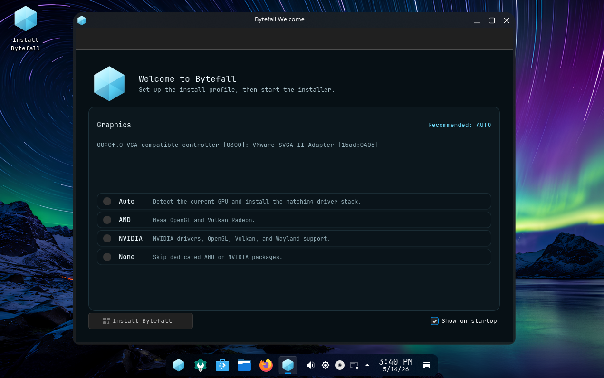
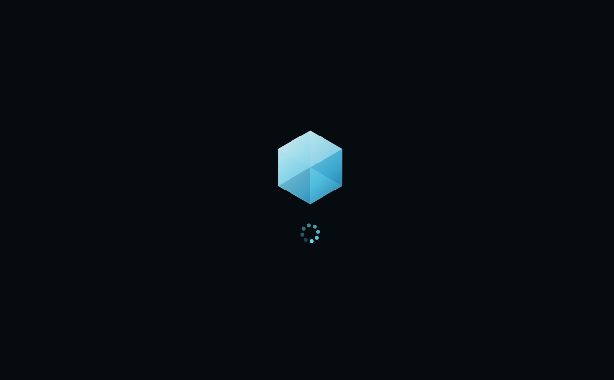
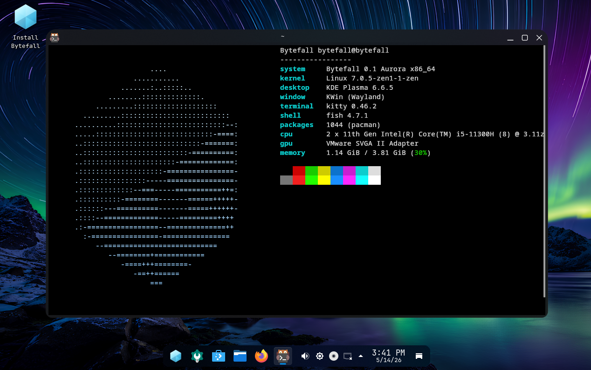

Bytefall is an opinionated linux distro built for lightning fast performance. Based on Arch btw, it only leaves what's essential.

Bytefall is very different from other distros. It uses a high contrast theme, a good font, and is easy to recognize. Bytefall's logo is supposed to be a transparent cube, btw


The stack, kept small.
We didn't add any bloat or unneeded features in Bytefall, because Bytefall is made for optimization.
Bytefall is delivered ready for systems work. The curated package set includes compilers, container runtimes, and modern terminal utilities.
The project is currently refining its installer stability. Calamares is being integrated as the primary graphical path. While the system is highly stable for daily use, installation remains an area of active development.
Bytefall is defined in code. The entire ISO build pipeline is reproducible.
Aurora is the first public release of Bytefall. This ships all the customization from Bytefall, main development tools, and all the main stuff.